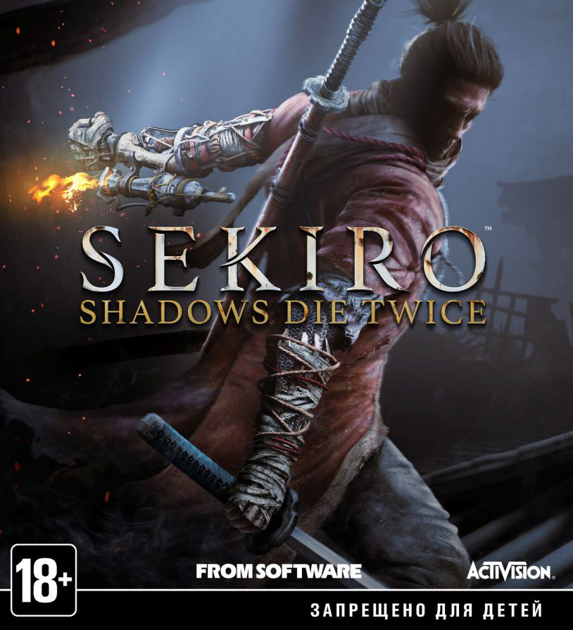

Начал играть в Sekiro: Shadows Die Twice
18.10.2021

С самого начала в глаза бросилась своеобразная боёвка, не такая как в серии Souls
У персонажа есть 4 действия (если не брать во внимание протез):
- Удар
- Блок мечом
- Отскок
- Прыжок
И вся боёвка построена на том, чтобы вовремя нажимать кнокпку блока, т.к. если нажать её в нужный момент,
произойлёт паррирование и противник откроется для ответного удара.
Казалось бы, почему нельзя использовать отскок? А потому что механику уворотов сильно ослабили,
и проделать удачное паррирование является по сути единственным способом избежать урона.
Так же не стоит забывать о том, что основной задачей во время поединка по сути является не снижение вражеского здоровья до нуля,
а заполнение его "полосы концентрации". Которая заполняется после удачных паррирований и ударов.
После заполнения "полосы концентрации" противника на 100%, он открывается для добивающего удара.
Встретил первого босса: Гёбу Масатака Онива
25.10.2021

Интересный босс, мне понравился поединок с ним
Обладает инетересной, не типичной для Souls Like особенностью, в виде ездового коня,
весело и задорно скача на котором Босс просто обожает вываливаться из таргета,
из-за чего следить за его движениями во время поединка не так то и просто.
В бою с этим боссом отлично помогает крюк-кошка, используя который можно быстро сократить дистанцию с боссом и нанести несколько ударов.
За победу над этим боссом игрок получает предмет "бусинка от чёток", которая позволяет увеличить максимальный запас здоровья,
и "воспоминание о поединке", которое увеличивает урон от атак.
Встретил второго босса: Дзюдзо-пьяница
28.10.2021

Либо разработчик немного (много!) привирает, называя этого детину "Пьяницей",
либо главный герой приходит на этот босс-файт тогда, когда у этого пьяницы сильно болит голова,
из-за чего он злой как стадо бешенных баранов.
Здоровья у него как у слона, "шкалу" главный герой заполняет в час по чайной ложке,
атаки босса практически убивают с одного удара.
Мало того, с боссом на арене гуляют ещё 15 человек обычных радовых противников,
которые отвлекают на себя внимание и наносят не кислый урон игроку.
Но разработчик всё-таки решил, что это будет слишком даже для истинных фанатов сложности в играх,
и добавил возможность пропустить первую фазу боя, нанеся боссу смертельный удар из засады,
после чего у босса остаётся одна жизнь.
Так же на арене с боссом находится дружественный NPC, который после разговора с ним бросится на помощь игроку.
Но даже так в бою с ним придётя попотеть.